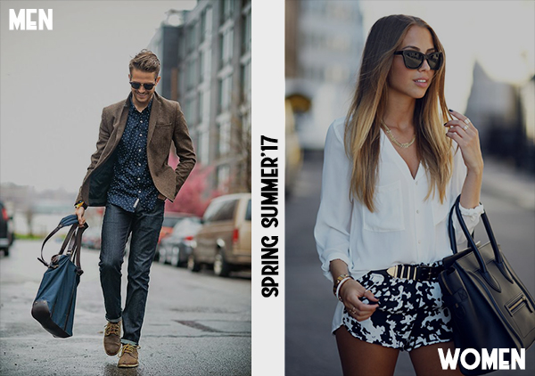

Luxury Rare Brands Available
Shift luxury clothing is a high fashion world renowed retail distributor. The idea of a company that acquires various rare top brands was formed by Sir Santano Juke II in 1969. The idea came into existence in 1975 when Sir Santano opened up shop and dealt Gucci, Versace, Fendi to mention a few. We have been on the rise since then
